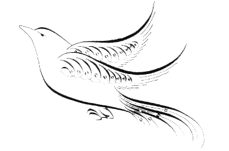

There is a lightbulb (incandescent,
it's currently off) in an upstairs room. You
are downstairs, standing next to a panel of three
light switches (all of them in the off position). One of
them controls the lightbulb. The other two don't do anything.
You must figure out which switch controls the bulb, with some
restrictions. 1) You can do whatever you want to the lightswitches,
as long as it's either turning them on or turning them off. 2) After fiddling
with the lightswitches, you can go upstairs and check the bulb. 3) You
cannot see the bulb nor any light shining from it from where you're initially standing. 4) You cannot make multiple trips up and down the stairs. 5) The lamp is in the ceiling and you don't have a ladder. 6) You are a mutant with 15-foot-long arms, so #5 is moot. So, you fiddle with the switches, you walk upstairs and check the bulb, and then you immediately decide which switch controls the bulb.How do you do it?
